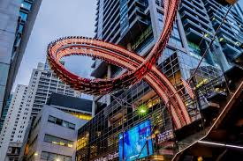
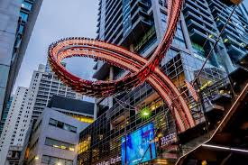

Sydney is the state capital of New South Wales and the most populous city in Australia and Oceania. Located on Australia's east coast, the metropolis surrounds Port Jackson and extends about 70 km (43.5 mi) on its periphery towards the Blue Mountains to the west, Hawkesbury to the north, the Royal National Park to the south and Macarthur to the south-west.Sydney is made up of 658 suburbs, 40 local government areas and 15 contiguous regions. Residents of the city are known as "Sydneysiders".As of June 2019, Sydney's estimated metropolitan population was 5,312,163 and is home to approximately 65% of the state's population.Indigenous Australians have inhabited the Sydney area for at least 30,000 years, and thousands of engravings remain throughout the region, making it one of the richest in Australia in terms of Aboriginal archaeological sites. During his first Pacific voyage in 1770,Lieutenant James Cook and his crew became the first Europeans to chart the eastern coast of Australia,making landfall at Botany Bay and inspiring British interest in the area. In 1788, the First Fleet of convicts, led by Arthur Phillip, founded Sydney as a British penal colony, the first European settlement in Australia. Phillip named the settlement after Thomas Townshend, 1st Viscount Sydney.Penal transportation to New South Wales ended soon after Sydney was incorporated as a city in 1842. A gold rush occurred in the colony in 1851, and over the next century, Sydney transformed from a colonial outpost into a major global cultural and economic centre. After World War II, it experienced mass migration and became one of the most multicultural cities in the world.At the time of the 2011 census, more than 250 different languages were spoken in Sydney.In the 2016 Census, about 35.8% of residents spoke a language other than English at home.Furthermore, 45.4% of the population reported having been born overseas, and the city has the third-largest foreign-born population of any city in the world after London and New York City.Sydney has hosted major international sporting events such as the 2000 Summer Olympics. The city is among the top fifteen most-visited cities in the world,with millions of tourists coming each year to see the city's landmarks.Boasting over 1,000,000 (2,500,000 acres) of nature reserves and parks,its notable natural features include Sydney Harbour,the Royal National Park, Royal Botanic Garden and Hyde Park, the oldest parkland in the country.Built attractions such as the Sydney Harbour Bridge and the World Heritage-listed Sydney Opera House are also well known to international visitors. The main passenger airport serving the metropolitan area is Kingsford-Smith Airport, one of the world's oldest continually operating airports.Established in 1906, Central station, the largest and busiest railway station in the state, is the main hub of the city's rail network.

 
